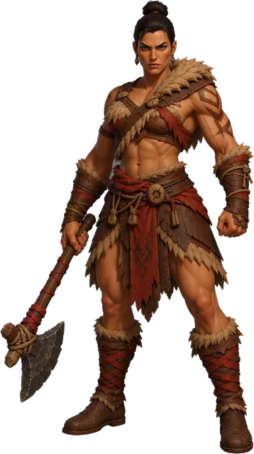
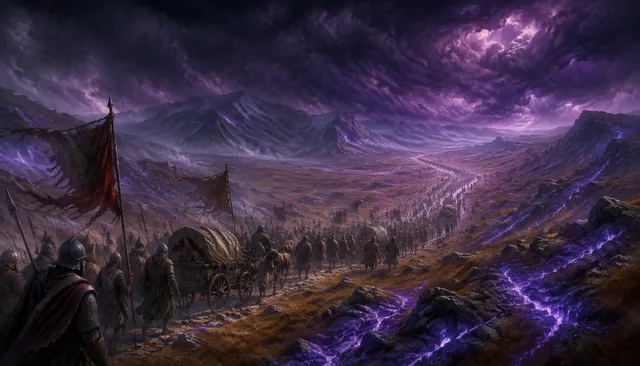
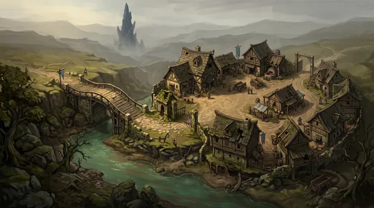
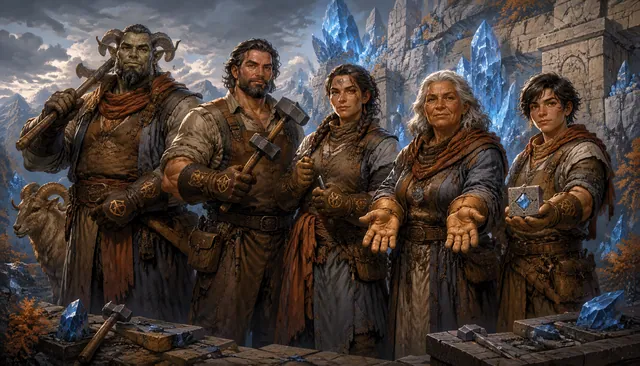
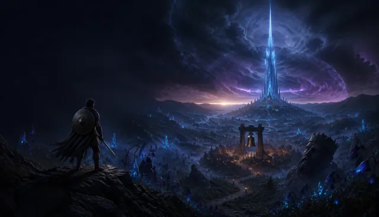
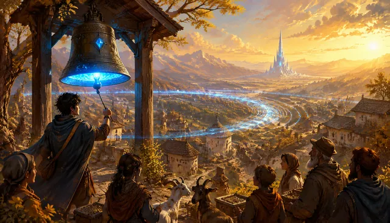
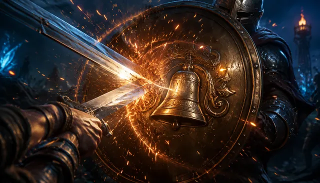
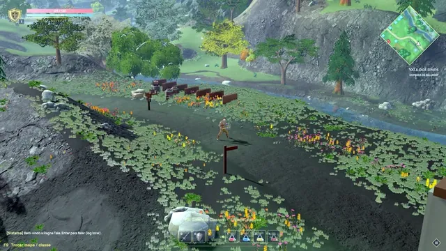

Personagens
O Bárbaro ganha corpo
O primeiro herói a sair do desenho para o jogo: modelo 3D, movimentos e os golpes de machado.

Em construção
O Ragna Tale está sendo erguido agora, sino a sino. Aqui fica o que está na forja, o que já entrou no jogo e o que vem depois.
Agora

O primeiro herói a sair do desenho para o jogo: modelo 3D, movimentos e os golpes de machado.

A queda do reino e a história das doze classes agora formam um fio só.

A segunda vila do jogo está saindo da planta para o terreno.

Poções, materiais, cartas de monstro e ilustrações da história estão sendo pintados.
Linha do tempo
Quer ver por dentro?As telas do build e os sons em construção estão na Mídia. Os vídeos voltam quando forem regravados.Abrir a Mídia →
Devlog

O Ragna Tale ganhou uma vitrine: mundo, classes, bestiário e este diário.

Cada classe agora carrega um pedaço do que aconteceu com o reino.

Cada classe tem uma sequência de três golpes, e o herói encara o alvo o tempo todo.

Quatro espécies, trilhas novas e um rei goblin esperando no fim do campo.